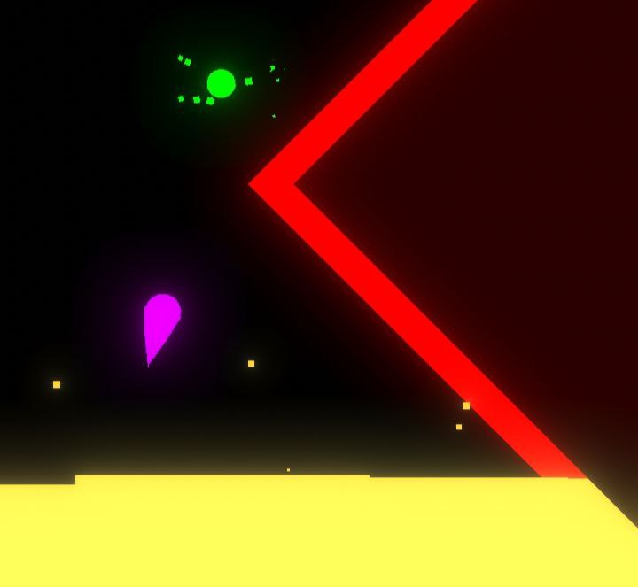
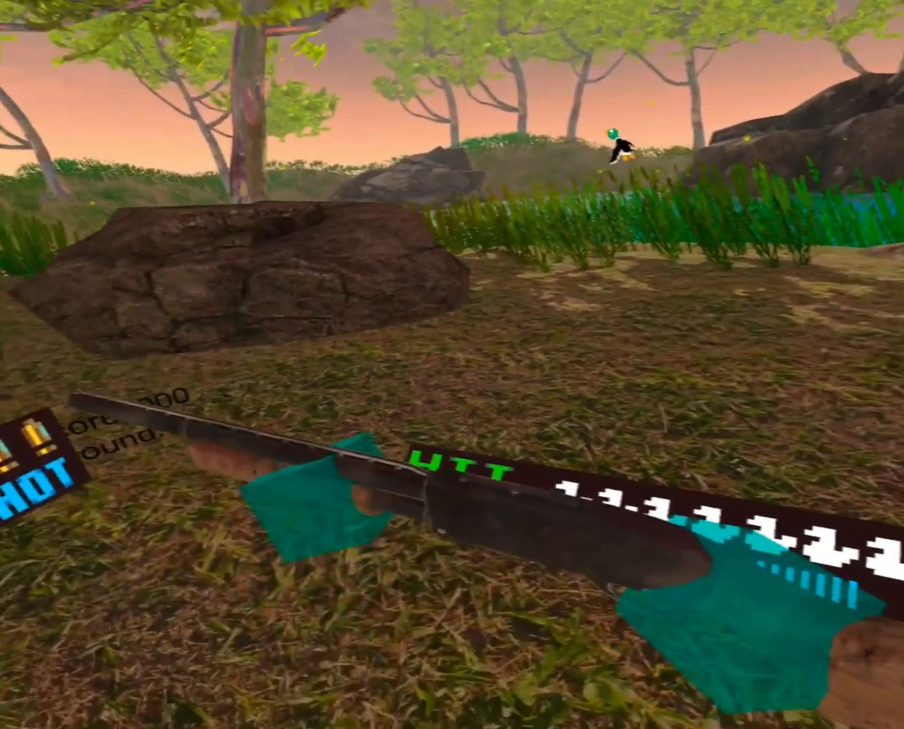
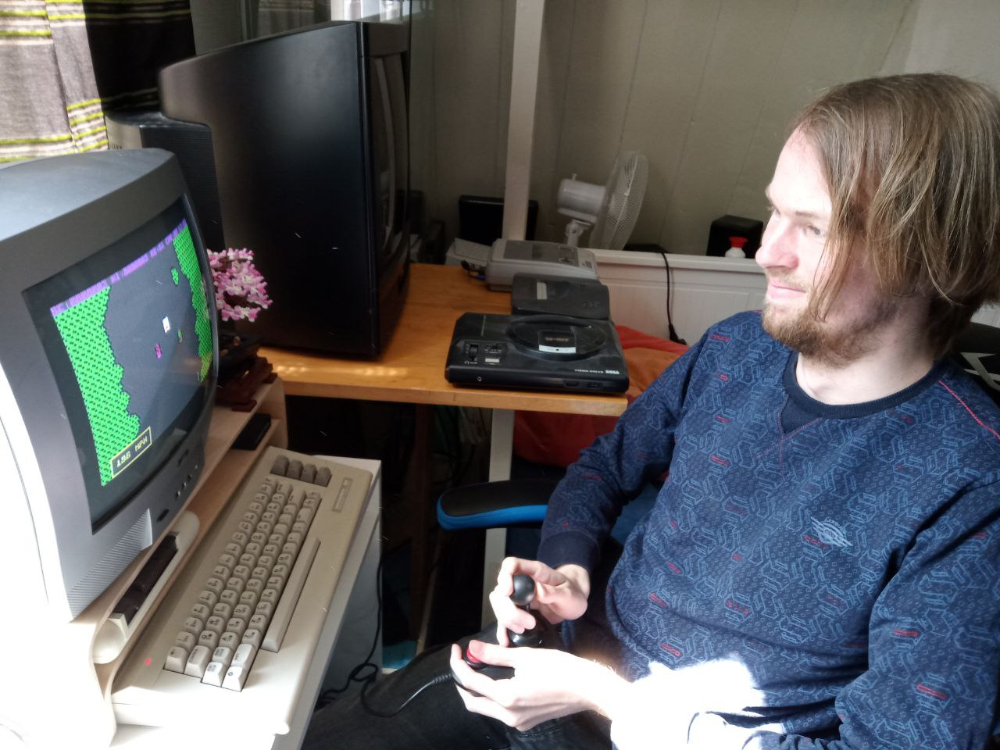

PolygoniaValley
For my MBO studie I did an internship at Brin in Groningen. Hereby I was tasked with making several game related objects for them to use in there game work. This game was ment to be played using the Oculus Quest 2, and I bought one for the job. The whole game was made in Unity with C#. With the then ongoing pandamic almost the whole internship was done remotely. This really tested my at the time development skills but after a year of working for them I can say with confident that everytrhing ran smoothly.I do honestly wish I was still working on the project, mostly because of the skills I gained from HBO and reformatting the code I wrote for Brin.

FranticFling
FranticFling is a mobile game I developed as a proof of concept. I had a number of set goals for the game, all of which I reached. Just like PolygoniaValley, the game was made in Unity with C#. Although this game was made for mobiel phones rather than VR.The game was developed during my internship as I needed to create two applications for school during that period. However my project always where rejected as the teacher thought they where to dificult. What I ended up doing was making an easier project voor school in only a couple hours. After which I continued on the projects school deemed to dificult. This project, together with the project Super DuckHunt, could very well have been what school deemed to dificult.

Super DuckHunt
DuckHunt is one of the many games for the NES which I fell in love with as soon as I got an original copy. After scrolling trough YouTube I found videos of a game called DuckSeason. which was basically if DuckHunt was a horror VR game.\ While I did not want to create a horror game, as I don't really enjoy playing those. I did like the idea of DuckHunt for VR.With this Idea set in mind I set aside two days to create my version of a DuckHunt port for the Oculus Quest. After these two day I ended up with a playable version of the game, with all the element from the original ported over. The game combines 3D elements from the Unity asset store and 2D elements from the original game.

Websites
I have created a number of websites, all with the game endgoal, to be my portfolio website. The problem however was that at first I used Wix, while usefull, doesn't look good as a portfolio website from a software engineer. Because of this I made the decision to build a website from scratch, using the skills I got from my first year on HBO.The first few websites I made aren't that interesting. As I had barely any skills in webdevelopment in the first place. After a while I managed to create this website
(version 3, not counting Wix). This version of the website I am quite happy with.

TowerDefense
At the second half of my second year HBO I found myself having a lot of free time on my hands. Besides playing a lot of game and watch a lot of tv shows, I ended up starting another game related project. This time the goal was to create a console game based of the tower defence game Kingdom Rush. I ended up finding a number of premade scripts which did what I wanted to. However, just like with super DuckHunt, I ended up programming everything myself for the challange.The only thing I did not manage to make, was the art.

Commodore
To go back to my roots as a software engineer I desided to revisit the first programming language that got me into programming, BASIC. As I do not anymore own a 3D with the program SmileBasic on it (the program I used back then) I ended up using my old Commodore 64 C from my collection.The game I ended up making didn't use graphics, only the text characters that where known to the computer. Futhermore I ended up using a quirk of the commodore when writing text to the screen. Where if you write a new line at the bottom of the screen. the whole screen and it's characters shift up one.